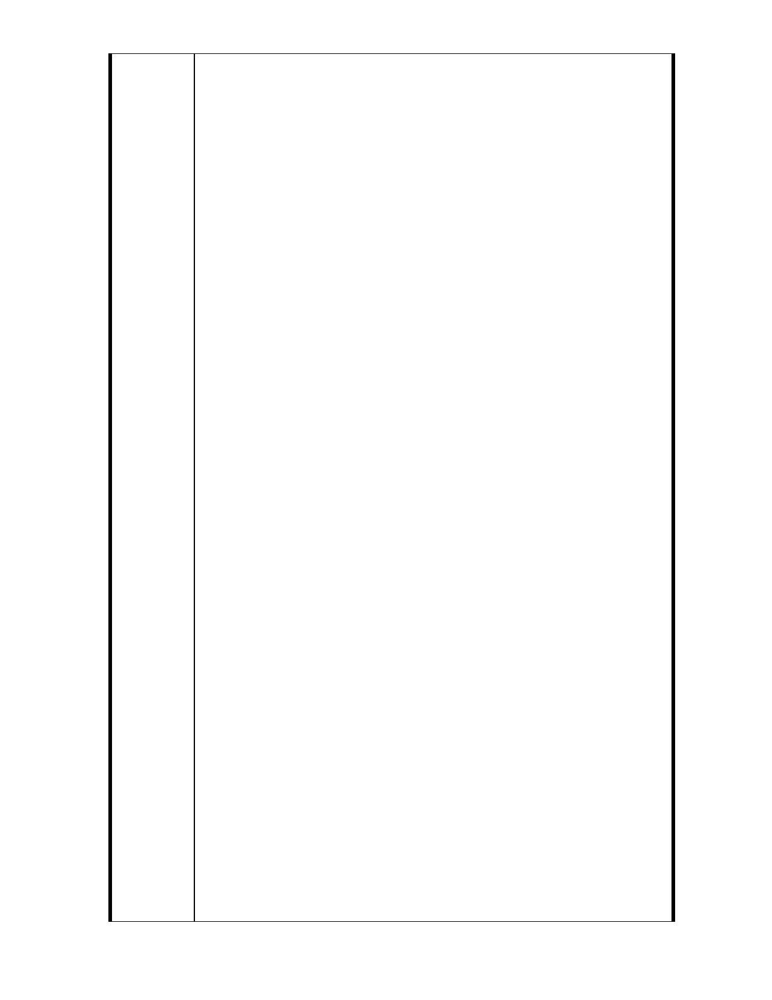

地」的作業程序，自始至今，充斥著輕忽與瑕疵，令人不解。
(1) 首先。這塊土地由國有財產地變為私有土地，完全經過政
府機關與機關間合法的手續－「國有財產局台灣北區辦事
處國有基地產權轉移證明書」 (76 財台北區地售字第
00455 號 ) 專案讓售，發文的日期是民國 76 年 2 月 26
日。 而台北市政府工務局也很快發出使用執照 (75 使字
0890 號 )，發文的日期更早在民國 75 年 9 月 2 日。
國有財產局在明知外雙溪為禁建文教區的情形下，必定經
過慎重的審思考量，才會作出釋出的決定。 他們專業專
責的決策，應予尊重。否則，政府施政後者輕易推翻前者，
儘喪政治倫理，必將導致政策的混亂，人民喪失對政府、
國家的信心與信賴。
(2) 其次。這次「外雙溪地區都市計畫通盤檢討 ( 主要計畫 )
案」實施，所依據的 76 年 6 月 2 日「修訂外雙溪附近地
區細部計畫 ( 通盤檢討 ) 暨配合修訂主要計畫案」實為
將這塊原為「文教區」土地改為「機關用地」的始作俑者。
該次的作業過程粗糙草率，未考量國有財產局已在三個月
前將土地售於私人，已成法定的私人財產。不僅未讓居民
知悉內容，有關相關的法令公文也未仔細參閱，遠不及此
次諸位的用心、周延與親民。以行政法規而言，都發局怎
能在私有財產所有人毫不知情的情形下， 將其重作規 畫
改為「機關用地」，以備將來假借某機關需地，再以低微
補償費徵收使用。這就好比有人做生意，賣出一件東西給
他人，銀貨兩訖後，又把這件東西再列在貨單上，等到下
次來了位更有份量的別人看上了這件東西，再從那個老實
可憐人的手上把東西要回來賣給了這個人，然後塞點錢
( 補償費 ) 以擺平這件事情。這種事情即使發生在一般
人身上，已夠令人駭異，更不用說發生於政府機關了。
（四）居民疑慮
再次。聽說這次「外雙溪地區都市計畫通盤檢討 ( 主要
計畫 ) 案」的實施，是為因應故宮博物院推行的「大故宮計
畫」，對於外雙溪現有土地才重作使用檢討規畫。就我們的認
知，政府規畫分配土地使用，應該是以國有、公有土地為對
象，不應針對私有財產土地。行政院過去就曾經指示通令所
屬機關對於國有、公有土地管理，明確指示：「機關需要用地
時，且以國有、公有地移撥或交換取得使用，而不要求主管
地方都市計畫的政府來編定、變更都市計畫，免造成以後的
麻煩、困擾和徵收時的民怨，指示通令所屬機關應當確實遵
守，此次這塊土地名目的訂定，顯然違背了行政院的指示。
聽說這塊土地之劃定為「機關用地」實便是為故宮博物院特
作預留者。
為此， 我們所有住戶曾兩度拜訪故宮，第二次且請得
立法委員周守訓先生進行溝通協調，故宮周功鑫院長兩次發
- 29 -